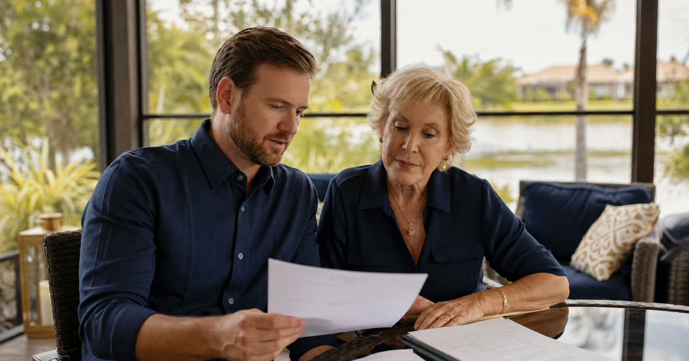

Carla's letters just arrived. Now what?
Carla, 58, lives in Deltona and was appointed plenary guardian for her father Manny after a judge found he could no longer manage his finances or his medical decisions safely on his own. Carla is a composite example, not an actual Truestead client, but her situation is one I see often: an adult child gets letters of guardianship and feels a mix of relief and dread. The relief is that someone is now legally authorized to help. The dread is the paperwork nobody warned her about.
Florida guardianship is a court process under Chapter 744 of the Florida Statutes, used when a judge finds a person incapacitated and no less restrictive option, like a durable power of attorney or health care surrogate, will do. Once letters are issued, the guardian is not free to simply act. The guardian becomes a court-supervised fiduciary, and the first year has a defined rhythm of filings.
Have this exact situation? Talk it through with a Florida attorney — the 20-minute consultation is free.
Book Free Consult or call (888) 388-8445The eight-hour course: when it happens and why it matters
Before Carla could truly begin, she had to complete an approved family guardian education course. For a family member serving as guardian, Florida law generally requires a minimum of eight hours of instruction covering topics like the guardian's duties, the rights retained by the ward, and the reporting obligations ahead. Professional guardians face a longer initial and ongoing training track and must also register with the Office of Public and Professional Guardians, but a family guardian like Carla only needs the one course approved for use in her judicial circuit.
Each circuit's chief judge approves the courses available locally, so Carla's clerk of court or local guardianship office can point her to an approved provider. Many family guardians complete this training before the hearing or shortly after, since some courts want proof of completion early in the case.
The initial guardianship plan and the verified inventory
Within a short period after letters are signed, generally described in the statutes as sixty days, a guardian of the person must file an initial guardianship plan, and a guardian of the property must file a verified inventory of everything the ward owns. Because Carla was appointed plenary guardian, meaning she has authority over both Manny's person and his property, she owed the court both documents.
- The guardianship plan describes Manny's current living situation, his medical and personal care needs, and Carla's plan for meeting those needs over the coming year.
- The verified inventory lists Manny's assets: his home, bank accounts, any investments, vehicles, and personal property of significant value, along with their estimated worth as of the date Carla's authority began.
These filings give the court, and Manny's other interested family members, a clear starting snapshot. Everything that happens later, including the annual accounting, gets measured against this baseline.
Opening the guardianship account and keeping records
One of Carla's earliest practical steps was opening a dedicated guardianship bank account titled in her name as guardian for Manny, separate from her own personal accounts and separate from any account Manny held before the guardianship began. Commingling a ward's money with the guardian's own funds is one of the fastest ways to draw scrutiny from the clerk's office.
From that point forward, Carla needed to keep receipts, bank statements, and records of every deposit and withdrawal made on Manny's behalf. This is not busywork. It is the foundation for the annual accounting, and a guardian who keeps sloppy records in month one usually struggles to reconstruct them by month twelve.
The annual plan, the annual accounting, and the clerk's review
A guardian of the person generally files an updated annual guardianship plan within a set window after the anniversary month of the original appointment. A guardian of the property generally files an annual accounting covering the prior calendar year, with a filing deadline described in the statutes as falling early in the following year. The annual accounting must show every receipt and disbursement of the ward's property during the period, along with a statement of what remains on hand.
The Clerk of Court has a statutory role reviewing and auditing these filings. After reviewing an initial or annual report, the clerk prepares findings for the judge, flagging any concerns, unexplained gaps, or missing documentation. This is a real audit function, not a rubber stamp, and it is one of the built-in protections that makes Florida's guardianship system accountable.
Which acts need the judge's approval first
Not every decision a guardian makes requires going back to court. Day-to-day care, ordinary bill paying, and routine medical decisions within the scope of the letters generally do not. But Florida law requires a guardian of the property to seek prior court approval for certain significant acts, including things like selling the ward's real estate, making gifts of the ward's assets, and settling claims or lawsuits on the ward's behalf. A guardian who is unsure whether a particular transaction needs advance approval should ask the court or a Florida guardianship attorney before acting, rather than after.
Carla's first-year checklist
- Complete the approved eight-hour family guardian education course for her circuit.
- File the initial guardianship plan describing Manny's care needs.
- File the verified inventory of Manny's property within the required window.
- Open a separate guardianship bank account titled properly in her name as guardian.
- Keep monthly records of every transaction involving Manny's money.
- Seek prior court approval before selling real estate, making gifts, or settling any claim on Manny's behalf.
- File the annual guardianship plan and the annual accounting on time each year the guardianship continues.
By the end of her first year, Carla had a working system: a folder of receipts updated monthly, a calendar reminder for each filing deadline, and a habit of calling her attorney before, not after, any transaction that felt outside the routine. That is really what the first year of guardianship asks of a family member. Not perfection, but a consistent, documented, and timely record.
Frequently Asked Questions
The Truestead Takeaway
Carla's first year as Manny's guardian was really a year of documentation: a training course, an initial plan and inventory, a properly titled account, and careful records leading up to the annual accounting. None of it is designed to make a family guardian's life harder for its own sake. It exists so the court, and the rest of the family, can trust that Manny's care and his money are being handled honestly. If your family is facing a similar appointment, or wondering whether a less restrictive tool like a durable power of attorney could have avoided court supervision altogether, that is a conversation worth having with a Florida elder law attorney before letters are ever issued, or right after, while there is still time to build good habits from day one.
Have a child turning 18? Get the free 18 & Protected packet — the legal documents every Florida 18-year-old needs.
Get the Free PacketTalk to a Florida Attorney
Every family’s situation is different. Schedule a consultation with Arthur Simpson, Esq. to review your plan and your options under Florida law.
Schedule a Consultation →This article is for general informational purposes only and does not constitute legal advice, nor does reading it create an attorney-client relationship. Florida estate, elder, probate, and real estate law are fact-specific and change over time. Consult a licensed Florida attorney about your individual circumstances. Arthur Simpson, Esq. is licensed to practice law in the State of Florida. Attorney advertising.
Talk to a Florida Attorney — Free 20-Minute Consultation
Pick a time below. No obligation, no pressure — just answers.